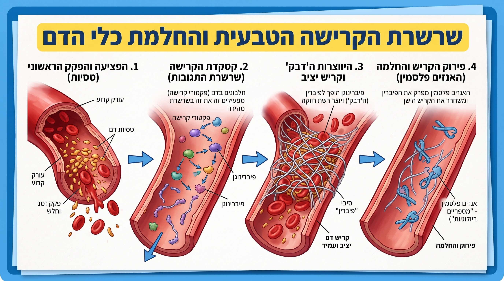

שלב 1: מנגנון קסקדת הקרישה
חקרו את מנגנון הקרישה הטבעי מתוך איור 2 וענו על השאלות המכוונות לאחריו.

📷 תמונת Krish.jpg
יש לוודא שקובץ התמונה Krish.jpg נמצא באותה תיקייה של קובץ ה-HTML.
איור 2: שרשרת הקרישה הטבעית ופירוקה
זיהוי שלבי הקרישה והחלמת כלי הדם
הפציעה והפקק הראשוני
טסיות הדם נצמדות לקרע ויוצרות חסימה זמנית וחלשה בלבד.
היווצרות ה'דבק' וקריש יציב
קסקדת הקרישה הופכת את הפיברינוגן לרשת חזקה ועמידה מעל הפצע.
פירוק הקריש והחלמה
פירוק רשת הפיברין לאחר החלמת הרקמה לחידוש זרימת הדם.
שאלות מכוונות להבנת האיור (עבודה זוגית)
מהו ההבדל המרכזי בין ה"פקק הזמני" שיוצרות טסיות הדם בשלב 1, לבין ה"קריש היציב" המוצג בשלב 3? מאיזה רכיב בנוי ה"דבק" שמחזק את הקריש?
כיצד השינוי המבני הזה (מהפיכת חלבון שנע בדם לרשת סיבים דביקה) מאפשר לעצור את זרימת הדם החוצה לחלוטין?
מהו תפקידו של האנזים פלסמין בשלב 4, ומדוע שלב זה חיוני לחזרת כלי הדם לתפקוד תקין לאחר שהפצע החלים?
תזמון ואיזון במערכת:
האיור מראה לנו שמערכת הדם מכילה גם מנגנון שבונה את קריש הדם (פיברין) וגם מנגנון שמפרק אותו (האנזים פלסמין).
הסתמכו על שלבי התהליך באיור וענו:
מתי לדעתכם הוא התזמון הנכון שבו הגוף צריך להפעיל את האנזים המפרק (הפלסמין), ומה לדעתכם יתרחש בתוך כלי הדם אם האנזים המפרק יופעל מוקדם מדי - עוד בזמן שהפצע מדמם?